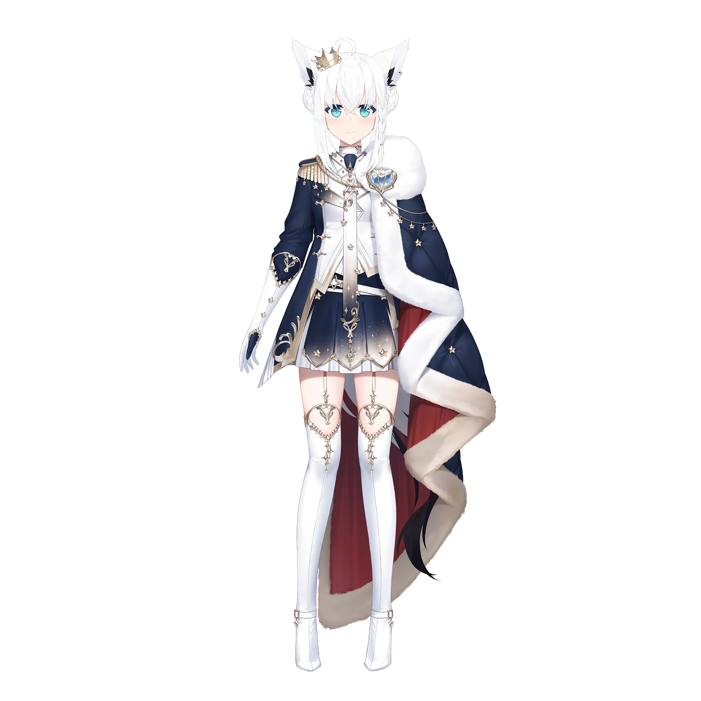
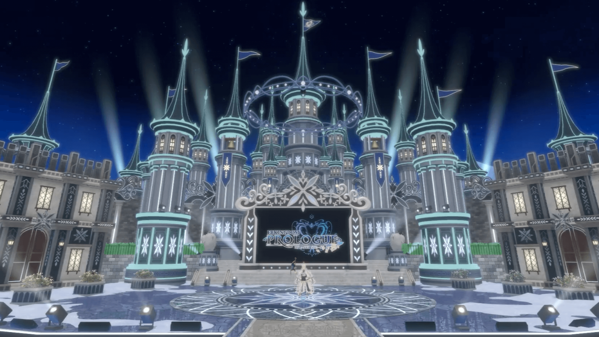
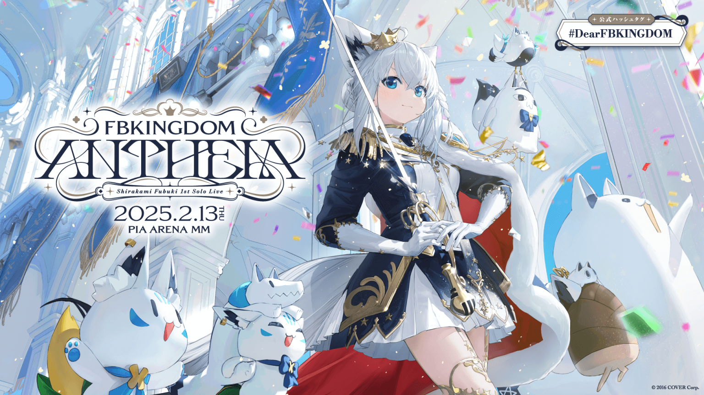
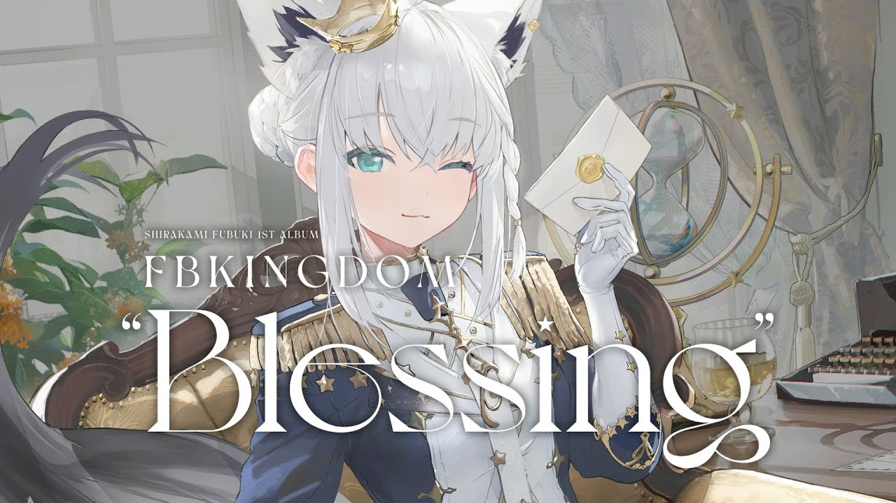
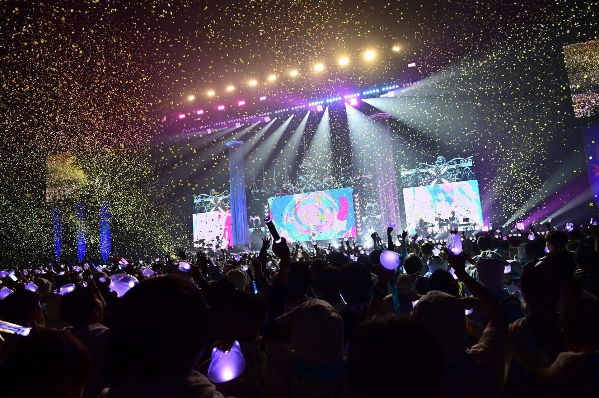
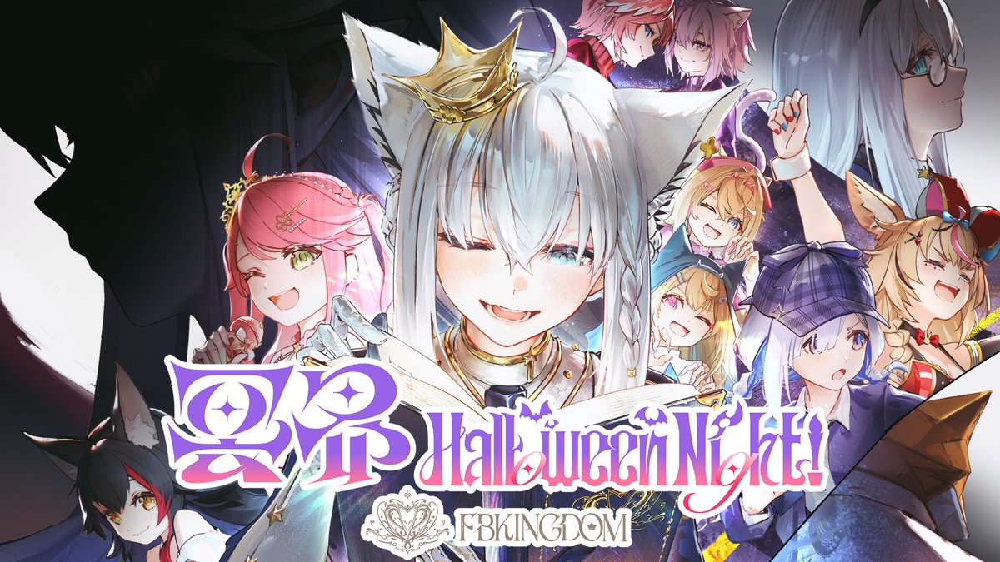
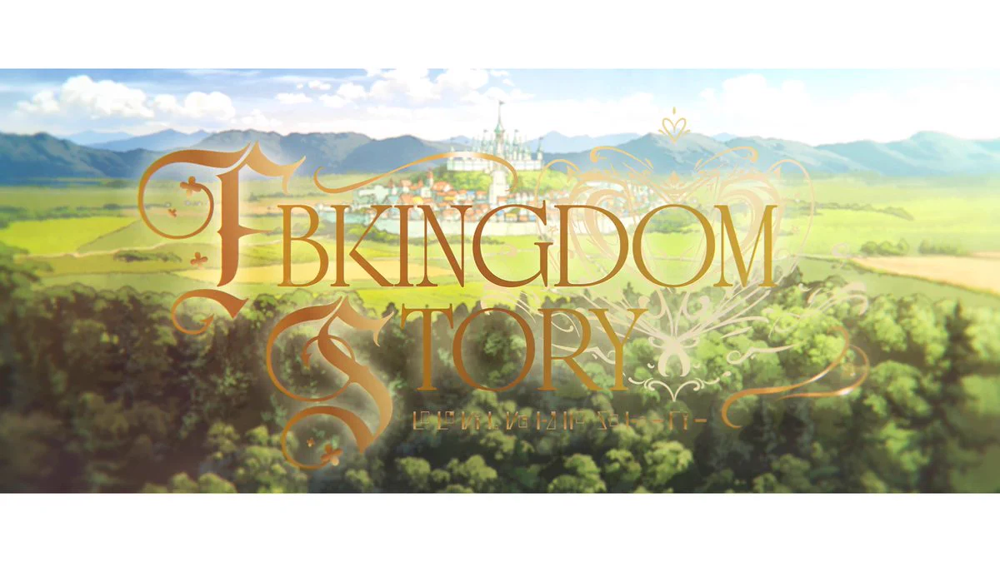
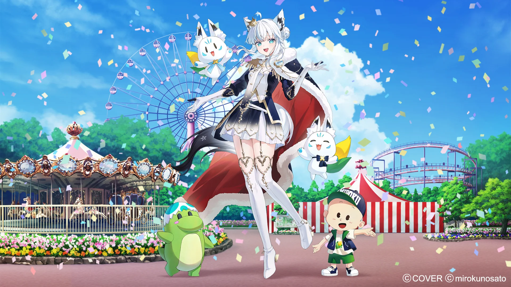

WELCOME TO
白上フブキが国王として治める、笑顔と物語が満ちる架空の王国。
すこん部の皆様とともに歩む、王国の案内ページへようこそ。
「FBKINGDOM（フブキングダム）」は、白上フブキが国王として建国した笑顔あふれる架空の王国です。
国民である「すこん部」の皆様とともに、歌やライブ、様々な配信活動を通じて、
かけがえのない楽しい思い出とストーリーを創り続けています。

【夢】 みんなで沢山ライブ！すこん部のみんなと楽しいことを沢山する！
【好きなもの】 お茶（特に緑茶）、紅茶、オレンジジュース / グミ、ジャーキー
建国からこれまでの歴史と重要な出来事







王国の歴史とドラマを描くファンタジー小説企画。
8周年を記念した映像プロジェクト。
新たな王国の企画が準備中です。お楽しみに！